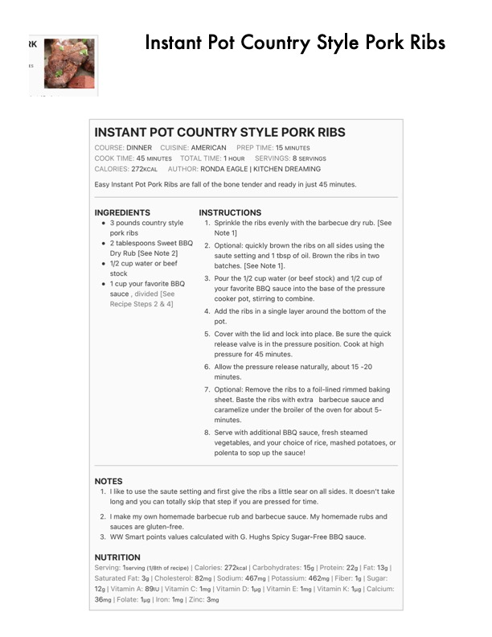

Instant Pot Country Style Pork Ribs

Original cookbook page 236
Ingredients
- 3 pounds country style 1. Sprinkle the ribs evenly with the barbecue dr
- pork ribs Note 1]
- * 2 tablespoons Sweet BBQ — 2. Optional: quickly brown the ribs on all sides u
- Dry Rub [See Note 2] saute setting and 1 tbsp of oil. Brown the ribs
- 1/2 cup water or beef batches. [See Note 1].
- stock
- your favorite BBQ sauce into the base of the
- cooker pot, stirring to combine.
- 1cup your favorite BBQ
- sauce , divided [See
- Recipe Steps 2 & 4]
- pot.
- release valve is in the pressure position. Cook
- pressure for 45 minutes.
- minutes.
- sheet. Baste the ribs with extra barbecue sa
- caramelize under the broiler of the oven for al
- vegetables, and your choice of rice, mashed
- polenta to sop up the sauce!
- NOTES
- long and you can totally skip that step if you are pressed for time.
- sauces are gluten-free.
- NUTRITION
- Saturated Fat: 3g | Cholesterol: 82mg | Sodium: 467mg | Potassium: 462mg | Fiber: 1
- 12g | Vitamin A: 891U | Vitamin C: 1mg | Vitamin D: 1ug | Vitamin E: Img | Vitamin K: 1
- 36mg | Folate: tug | Iron: 1mg | Zinc: 3mg
Instructions
- Pour the 1/2 cup water (or beef stock) and 1/2 cup of your favorite BBQ sauce into the base of the pressure cooker pot, stirring to combine.
- Add the ribs in a single layer around the bottom of the
- Cover with the lid and lock into place. Be sure the quick release valve is in the pressure position. Cook at high pressure for 45 minutes.
- Allow the pressure release naturally, about 15 -20 minutes.
- Optional: Remove the ribs to a foil-lined rimmed baking sheet. Baste the ribs with extra barbecue sauce and caramelize under the broiler of the oven for about 5- minutes.
- like to use the saute setting and first give the ribs a little sear on all sides. It doesn't take long and you can totally skip that step if you are pressed for time.
- make my own homemade barbecue rub and barbecue sauce. My homemade rubs and sauces are gluten-free.
- WW Smart points values calculated with G. Hughs Spicy Sugar-Free BBQ sauce.
Recipe #236 from collection